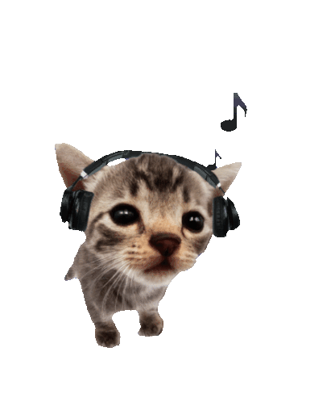

Sobre mí

Mi nombre completo es David Mastache De la paz, hay quienes me llaman "Mastache", "Dey", y personalmente mi preferido: "Davide", cumplí 20 años el 7 de marzo (se anotan la fecha).
Tengo dos hermanas, a la primera solo le gano por 2 años, estudia ing. en ciencia de datos, y me hace compañía en esta aventura, a la menor le llevo 10 años, y me divierte pasar tiempo con ella.
Normalmente paso mis dias haciendo tarea mientras escucho musica o tengo un video de fondo, también suelo cocinar (hace poco hice un pozole rojo que estaba buenisimo, receta de la abuela).
Mi situación social es, por lo menos, extraña, pues no soy muy sociable, pero me empujo a serlo, porque en el fondo siento bien cuando hago un nuevo amigo/a aunque me cuesta bastante continuar una platica.
¿Sabías que...?
- 1. Mascotas: Nunca he tenido mascotas propias, principalmente son de mis hermanas, pues siento que es una responsabilidad muy grande.
- 2. Titanic: En una etapa me enfoqué demasiado en ver documentales y encontrar información sobre el Titanic, tenía algo que me llamaba la atención.
Expectativas de la Materia
"Conocer y aplicar las tecnológias necesarias para los servicios web, también conocer los terminos utilizados en el sector, ¿backend, frontend, fullstack?, ¿que onda con el entorno de produccion?, comprender porqué HTML y CSS no son lenguajes de programación, pero sin embargo, son la base de toda la web."
"Crear aplicaciones web reales para facilitar la vida a las personas, y talvéz darle una manita de gato a la página del ITZ"
